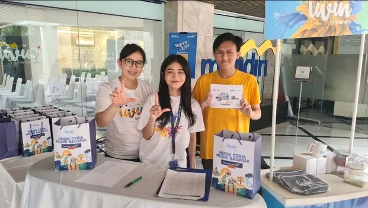
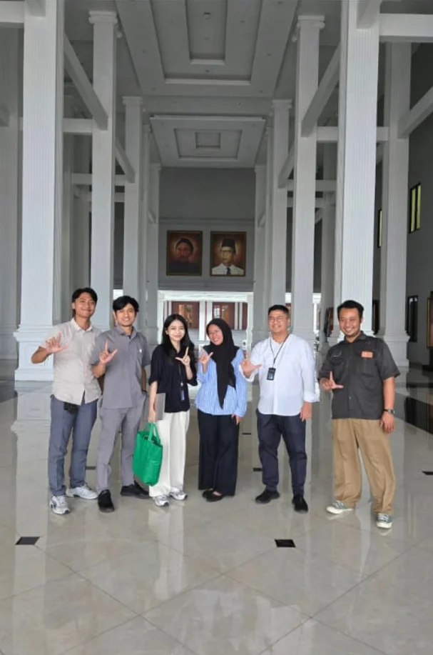
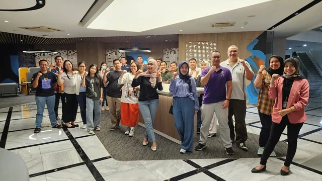
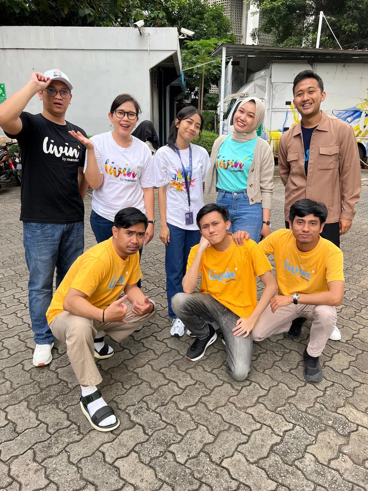

Education
Bachelor's Degree in Management
Universitas Merdeka Malang
Human Resource Management concentration
GPA 3.60 / 4.00
Hello, I'm Retno Ayu Wulandari.
I turn complex business data into actionable insights through KPI monitoring, interactive Excel dashboards, performance analytics, and strategic business analysis.
Branches Monitored
Featured Projects
Years of Experience
Based in
Jakarta, Indonesia
01 / About Me
Data-driven professional with experience in business performance analysis, retail funding, operational reporting, and strategic business support within the banking industry.
At PT Bank Mandiri, I monitored KPI performance across 24 branches, analyzed MTD, YTD and YoY trends, identified funding growth opportunities, and developed Excel dashboards to support business decisions.
Bachelor's Degree in Management from the University of Merdeka Malang, GPA 3.60/4.00.
02 / Academic & Leadership Background
Education
Universitas Merdeka Malang
Human Resource Management concentration
GPA 3.60 / 4.00
Organization Experience
Dewan Perwakilan Mahasiswa (DPM)
Led public relations initiatives, coordinated communications, and represented student aspirations.
03 / Professional Journey
Dec 2023 – Aug 2026
Data & Performance Analyst – Retail Funding Staff




Work & Team Moments
PT Bank Mandiri • Professional Journey
Auto-plays every 4 seconds • Use arrows to browse
Dec 2022 – Jun 2023
Remedial Admin
Processed and validated customer loan settlements, maintained credit and collection datasets, and supported document verification and operational reporting.
Jun 2021 – Jul 2021
Internship
Supported customer information system maintenance, BRImo assistance, customer data entry, account documentation, and filing.
03 / Selected Works
Interactive Excel analytics, performance dashboards and strategic planning case studies.
All project figures, employee identities and branch identifiers are synthetic and used for portfolio demonstration only. Projects are not official company publications.
04 / Capabilities
06 / Get In Touch
Open to discussing business analytics, performance reporting and career opportunities. Let's connect.